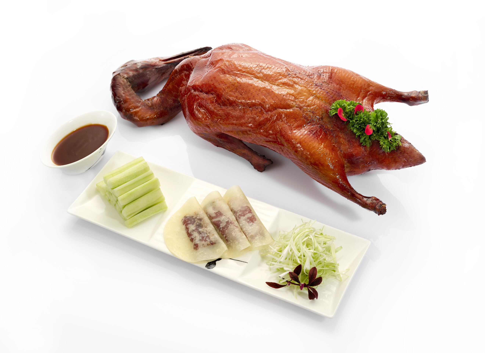
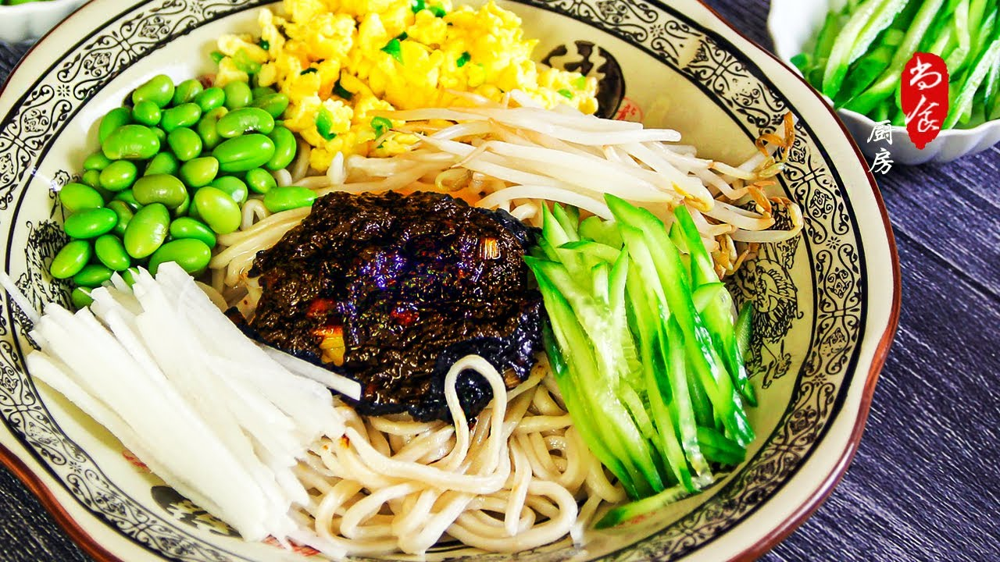
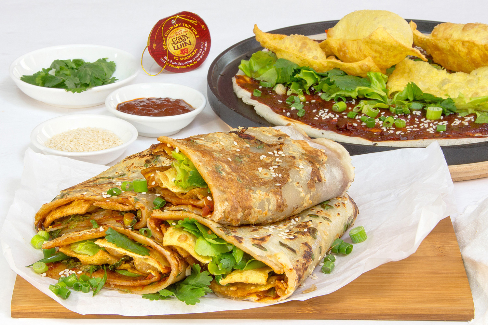

Peking Duck (Beijing Duck) is Beijing’s iconic dish, with 600+ years of history (Ming Dynasty imperial food). It uses “Beijing duck” (fat, tender, raised 45–60 days). Prep takes hours: inflate duck (separate skin/meat), soak in honey-vinegar water, dry 12–24h, then roast in jujube-wood ovens (adds sweetness). Served with thin lotus leaf cakes, scallions, cucumber, and sweet bean sauce.
Skin: Ultra-crispy, golden, melts in your mouth (no grease).
Meat: Tender, juicy, mild flavor.
Wrap: Soft cake + crunchy veggies + sweet sauce balances richness—each bite is savory-sweet.
High-end (Quanjude/Dadong): 200–400 CNY/duck (serves 2–3; total 150–250 CNY/person).
Mid-range: 100–200 CNY/duck (80–150 CNY/person).
Street food: 50–100 CNY/duck (30–60 CNY/person).

Zhajiangmian is a classic Beijing home-style dish—cheap, hearty, loved by locals. It uses thick wheat noodles (chewy) topped with “zhajiang” (fried soybean paste). The paste is made with fermented soybeans (key for umami), minced pork, and veggies (carrots, fungus). It’s a quick meal for busy days—sold in small eateries and street stalls.
Noodles: Chewy, firm (holds sauce well).
Sauce: Rich, savory, slightly salty (fermented soybeans); pork adds meatiness.
Veggies: Crunchy carrots/fungus add texture—warm, satisfying, like “home in a bowl.”
Small eateries: 15–30 CNY/bowl (enough for 1 person).
Mid-range restaurants: 30–50 CNY/bowl (bigger portions, more veggies).
Street stalls: 10–20 CNY/bowl (quick, cheap).

Jianbing is Beijing’s most popular street breakfast—cheap, filling, made fresh to order. It starts with a thin batter (wheat + mung bean), cooked on a griddle. Add an egg, flip, then top with scallions, cilantro, crispy fried dough, and sauce (spicy/sweet). Vendors fold it into a wrap—ready in 2 minutes. It’s a go-to for commuters and tourists.
Pancake: Soft inside, slightly crispy outside.
Toppings: Runny egg + crunchy fried dough + tangy sauce (spicy optional).
Overall: Savory, fresh, portable—perfect for on-the-go.
Basic version (egg + youtiao + standard sauce): 8–12 CNY/piece at most street stalls.
With add-ons: Extra egg (+2 CNY), cheese (+5 CNY), or extra youtiao crumbs (+1 CNY)—total 10–18 CNY/piece.
Tourist areas (e.g., near Tiananmen or hutongs): Slightly pricier (12–15 CNY/piece), but still affordable.
Note: Street vendors near residential areas (not tourist spots) often have the most authentic flavor—look for long lines of locals (a sure sign of good quality).